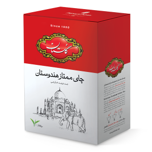

قرعهکشی ویژه مصرفکنندگان
قرعهکشی چای و ناتس گلستان
با خرید محصولات چای و ناتس گلستان، کد روی بسته را به شماره 30007405 ارسال کنید و در قرعهکشیهای دورهای ما شرکت کنید.
اطلاعات بیشتر
با خرید محصولات چای و ناتس گلستان، کد روی بسته را به شماره 30007405 ارسال کنید و در قرعهکشیهای دورهای ما شرکت کنید.
اطلاعات بیشترآنچه که امروز با نام مجموعه گلستان میشناسیم در سال 1329 بنیان نهاده شد. زمانی که شرکت گلستان فعالیت خود را با بستهبندی و توزیع چای پاکتی آغاز کرد. با گذر زمان و رشد اقتصاد کشور، نهال «گلستان» به تدریج تقویت شد و شاخ و برگ گرفت. فعالیتهای «گلستان» با تهیه، تولید و بستهبندی بهترین محصولات غذایی گسترش پیدا کرد. گلستان پس از سالها تلاش همچنان میکوشد تا به کمک تجربههای اندوخته شده در این سالها کالاهایی قابل اعتماد و با کیفیت تولید نماید.
هدفمندی و برنامهریزی موثر، ایمان و عزم راسخ برای دستیابی به اهداف تعیین شده، به کار گیری همکاران مجرب و دلسوز، استفاده از روش های نوین بازاریابی و مشتری محوری از جمله عوامل مهم در استراتژی شرکت گلستان است.
نام تجاری گلستان قدمتی به اندازه عمر شرکت گلستان دارد. گلستان ممتازترین محصولات خود را با این نام تجاری عرضه میکند. مصرفکنندگان محصولات گلستان همواره از این نام تجاری خاطره محصولاتی ممتاز و منحصر بفرد دارند و با اطمینان از نهایت کیفیت این نام تجاری حمایت میکنند.